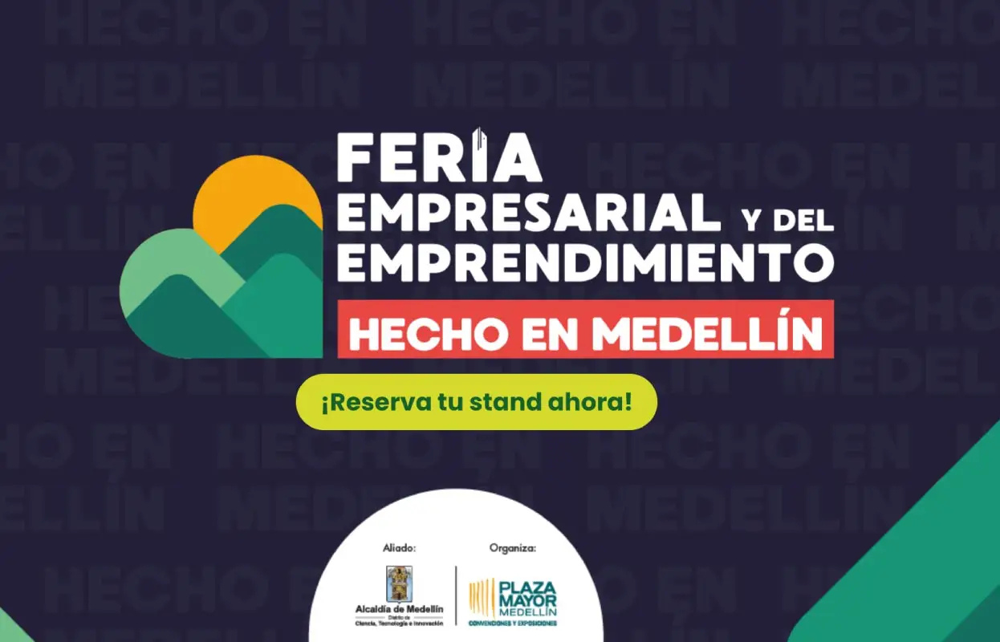
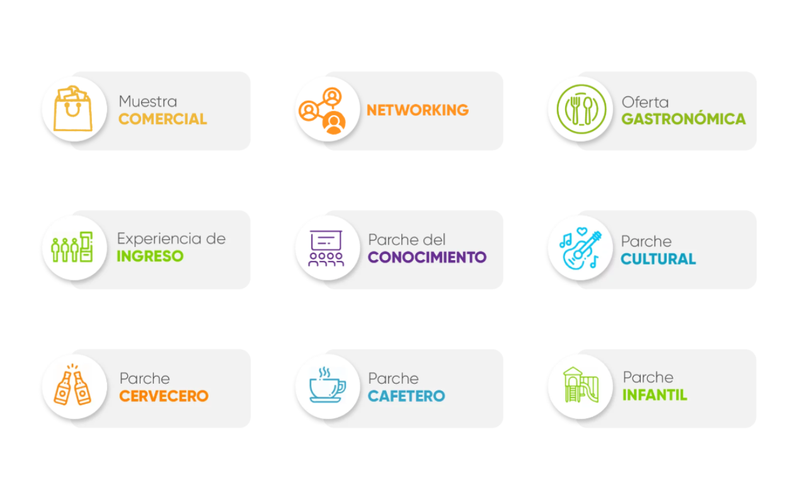
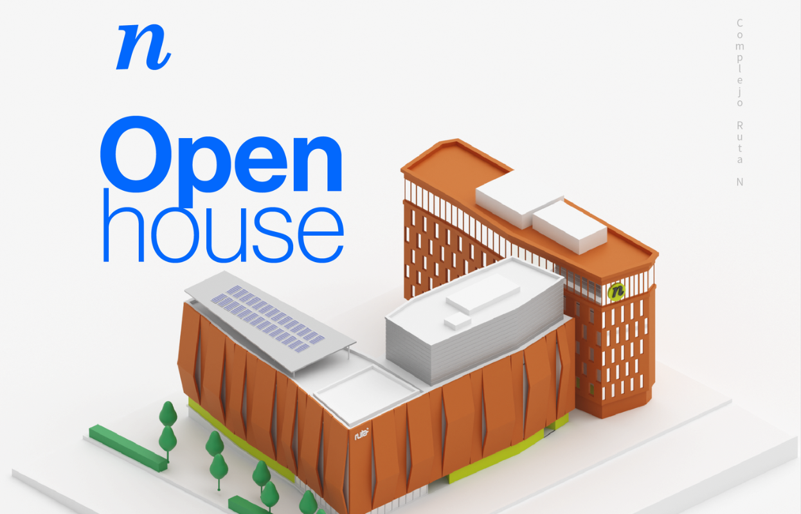

Feria Empresarial y Del Emprendimiento - Medellín 2025
Conoce esta iniciativa de Plaza Mayor Medellín que busca fortalecer el ecosistema empresarial de la ciudad y la región. Este evento multisectorial reúne a empresarios y emprendedores de diversos sectores económicos, ofreciendo una plataforma para visibilizar negocios y promocionar productos y servicios.
Feria Empresarial -Hecho en Medellín - 2025
Encuentra información de esta estrategia que busca beneficiar a todo tipo de empresarios, emprendedores y negocios, con prioridad a madres cabezas de hogar, víctimas del conflicto, reinsertados, reincorporados y población vulnerable que manufacturan y comercializan productos hechos en todos los rincones de la ciudad.
Open House - Junio 2025
Emprendedor tienes una cita para conocer un espacio creado donde compartirás conocimiento, conectarás con la innovación y descubrirás de primera mano cómo la Corporación Ruta N está impulsando la ciencia, la tecnología y el emprendimiento en Medellín.
Secretaría de Desarrollo Económico

Encuentra información actualizada sobre oportunidades que realiza la Secretaría de Desarrollo Económico para posicionar a Medellín como un distrito competitivo y global, que promueve el talento, la dinámica empresarial, emprendedora y de negocios a través de la ciencia, la tecnología y la innovación para el crecimiento económico y social.